Heaven
The Echo of the Veiled Prophet waits in the Silver City. Cube the five trophies of the Seals in Harrogath, on Hell, to open its portal.
The way in
Open the five Seal arenas. Collect their trophies, then cube all five in Harrogath on Hell.


The fight
 The Prophet
The ProphetPhysical and cold attacks · Frost Nova
Three lieutenants · healing Hierophants · Zealots
Lower Resist · Holy Fire · Holy Freeze · Holy Shock · Fanaticism
Dense crowds · nine champion or unique packs
What he drops
These are the chances per kill in Hell.
 The WordlessEcho of the Veiled Prophet · Hell · 4%
The WordlessEcho of the Veiled Prophet · Hell · 4%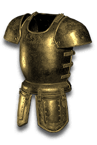
Anu's RadianceEcho of the Veiled Prophet · Hell · 2.5%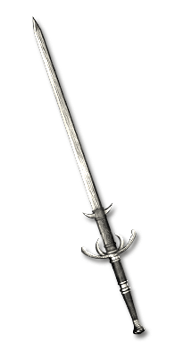
Inarius' Wing-BladeEcho of the Veiled Prophet · Hell · 2.5%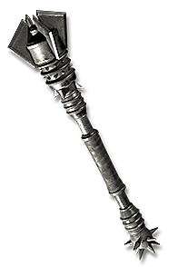
The Cathedral's MercyEcho of the Veiled Prophet · Hell · 2.5% The Lone VoiceEcho of the Veiled Prophet · Hell · 2.5%
The Lone VoiceEcho of the Veiled Prophet · Hell · 2.5%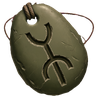
Uldyssian's AwakeningEcho of the Veiled Prophet · Hell · 2.5%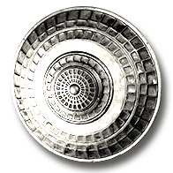
Ward of the LightEcho of the Veiled Prophet · Hell · 2.5%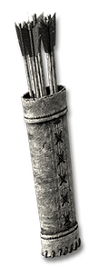
The Consecrated ShaftEcho of the Veiled Prophet · Hell · 0.4167% (1 in 240)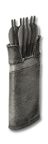
The Consecrated ShaftEcho of the Veiled Prophet · Hell · 0.4167% (1 in 240)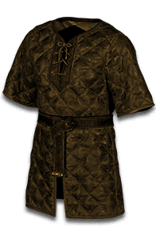
Shroud of the NephalemEcho of the Veiled Prophet · Hell · 0.3% (1 in 333)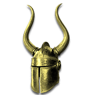
Imperius' Faceless HelmEcho of the Veiled Prophet · Hell · 4.009%Solarion's EchoEcho of the Veiled Prophet · Hell · 4.006%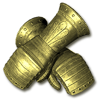
Imperius' Grasp of WrathEcho of the Veiled Prophet · Hell · 4.004%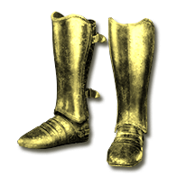
Imperius' MarchEcho of the Veiled Prophet · Hell · 4.004%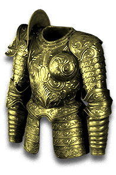
Imperius' Burnished MailEcho of the Veiled Prophet · Hell · 4.001%The Wordless
Awakened uniques grow through rune combinations. The Wordless is the first: Echo of the Veiled Prophet · Hell · 4%. Feed the amulet the power of runes.
The WordlessAmulet · Required level 90Echo of the Veiled Prophet · Hell · 1 in 25All Resistances +20-30+10-15 to all Attributes+40-60 to LifeCannot Be Frozen+10-15% Damage Taken Goes To ManaA sliver of the Arch's song, struck mute in the Cathedral of Light.

 →
→ The WhisperingAmulet · Required level 90Stage 1All Resistances +20-30+10-15 to all Attributes+40-60 to LifeCannot Be Frozen+10-15% Damage Taken Goes To Mana+1 to All Skills-(3-5)% to Enemy Fire Resistance-(3-5)% to Enemy Cold Resistance-(3-5)% to Enemy Lightning Resistance-(3-5)% to Enemy Poison ResistanceFed its first runes, it whispers, and wards begin to listen.
The WhisperingAmulet · Required level 90Stage 1All Resistances +20-30+10-15 to all Attributes+40-60 to LifeCannot Be Frozen+10-15% Damage Taken Goes To Mana+1 to All Skills-(3-5)% to Enemy Fire Resistance-(3-5)% to Enemy Cold Resistance-(3-5)% to Enemy Lightning Resistance-(3-5)% to Enemy Poison ResistanceFed its first runes, it whispers, and wards begin to listen.

 →
→ The ChantingAmulet · Required level 90Stage 2All Resistances +20-30+10-15 to all Attributes+40-60 to LifeCannot Be Frozen+10-15% Damage Taken Goes To Mana+2 to All Skills-(5-8)% to Enemy Fire Resistance-(5-8)% to Enemy Cold Resistance-(5-8)% to Enemy Lightning Resistance-(5-8)% to Enemy Poison Resistance+10% Faster Cast RateFed deeper runes, it chants, and wards falter.
The ChantingAmulet · Required level 90Stage 2All Resistances +20-30+10-15 to all Attributes+40-60 to LifeCannot Be Frozen+10-15% Damage Taken Goes To Mana+2 to All Skills-(5-8)% to Enemy Fire Resistance-(5-8)% to Enemy Cold Resistance-(5-8)% to Enemy Lightning Resistance-(5-8)% to Enemy Poison Resistance+10% Faster Cast RateFed deeper runes, it chants, and wards falter.
 →
→ The CommandingAmulet · Required level 90Fully awakenedAll Resistances +20-30+10-15 to all Attributes+40-60 to LifeCannot Be Frozen+10-15% Damage Taken Goes To Mana+3 to All Skills-(10-15)% to Enemy Fire Resistance-(10-15)% to Enemy Cold Resistance-(10-15)% to Enemy Lightning Resistance-(10-15)% to Enemy Poison Resistance+10% Faster Cast RateFully awakenedFed its last runes, it commands, and wards give way.
The CommandingAmulet · Required level 90Fully awakenedAll Resistances +20-30+10-15 to all Attributes+40-60 to LifeCannot Be Frozen+10-15% Damage Taken Goes To Mana+3 to All Skills-(10-15)% to Enemy Fire Resistance-(10-15)% to Enemy Cold Resistance-(10-15)% to Enemy Lightning Resistance-(10-15)% to Enemy Poison Resistance+10% Faster Cast RateFully awakenedFed its last runes, it commands, and wards give way.